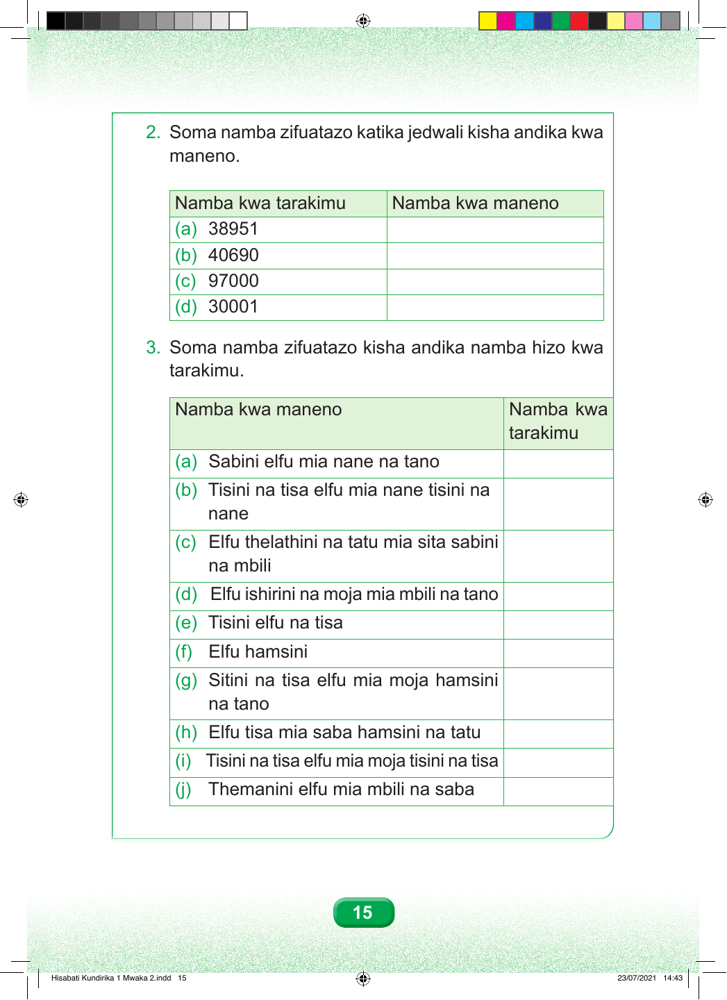

Swali la pili. Soma namba zifuatazo katika jedwali. Jedwali lina safu ya namba kwa tarakimu na safu ya namba kwa maneno. Sehemu a. Namba kwa tarakimu ni 38951. Namba hii kwa maneno inatamkwaje? Sehemu b. Namba kwa tarakimu ni 40690. Namba hii kwa maneno inatamkwaje? Sehemu c. Namba kwa tarakimu ni 97000. Namba hii kwa maneno inatamkwaje? Sehemu d. Namba kwa tarakimu ni 30001. Namba hii kwa maneno inatamkwaje? Swali la tatu. Soma namba zifuatazo zilizoandikwa kwa maneno. Jedwali lina safu ya namba kwa maneno na safu ya namba kwa tarakimu. Sehemu a. Sabini elfu mia nane na tano. Namba hii kwa tarakimu inatamkwaje? Sehemu b. Tisini na tisa elfu mia nane tisini na nane. Namba hii kwa tarakimu inatamkwaje? Sehemu c. Elfu thelathini na tatu mia sita sabini na mbili. Namba hii kwa tarakimu inatamkwaje? Sehemu d. Elfu ishirini na moja mia mbili na tano. Namba hii kwa tarakimu inatamkwaje? Sehemu e. Tisini elfu na tisa. Namba hii kwa tarakimu inatamkwaje? Sehemu f. Elfu hamsini. Namba hii kwa tarakimu inatamkwaje? Sehemu g. Sitini na tisa elfu mia moja hamsini na tano. Namba hii kwa tarakimu inatamkwaje? Sehemu h. Elfu tisa mia saba hamsini na tatu. Namba hii kwa tarakimu inatamkwaje? Sehemu i. Tisini na tisa elfu mia moja tisini na tisa. Namba hii kwa tarakimu inatamkwaje? Sehemu j. Themanini elfu mia mbili na saba. Namba hii kwa tarakimu inatamkwaje? 15 Hisabati Kundirika 1 Mwaka 2.indd 15 23/07/2021 14:43